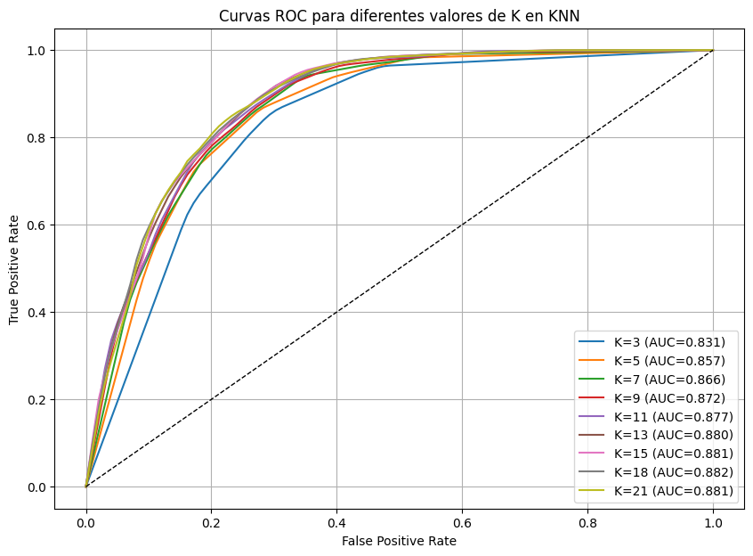
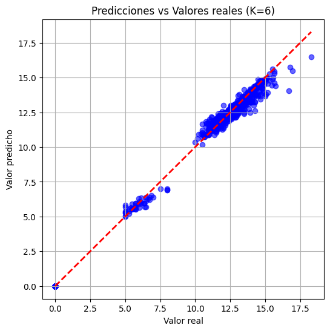

Predicción del riesgo de abandono académico en estudiantes universitarios#
import pandas as pd
import numpy as np
import matplotlib.pyplot as plt
Cargamos la base de datos “Predict Students’ Dropout and Academic Success”
df = pd.read_csv('data\data.csv', sep=';')
df.head()
| Marital status | Application mode | Application order | Course | Daytime/evening attendance\t | Previous qualification | Previous qualification (grade) | Nacionality | Mother's qualification | Father's qualification | ... | Curricular units 2nd sem (credited) | Curricular units 2nd sem (enrolled) | Curricular units 2nd sem (evaluations) | Curricular units 2nd sem (approved) | Curricular units 2nd sem (grade) | Curricular units 2nd sem (without evaluations) | Unemployment rate | Inflation rate | GDP | Target | |
|---|---|---|---|---|---|---|---|---|---|---|---|---|---|---|---|---|---|---|---|---|---|
| 0 | 1 | 17 | 5 | 171 | 1 | 1 | 122.0 | 1 | 19 | 12 | ... | 0 | 0 | 0 | 0 | 0.000000 | 0 | 10.8 | 1.4 | 1.74 | Dropout |
| 1 | 1 | 15 | 1 | 9254 | 1 | 1 | 160.0 | 1 | 1 | 3 | ... | 0 | 6 | 6 | 6 | 13.666667 | 0 | 13.9 | -0.3 | 0.79 | Graduate |
| 2 | 1 | 1 | 5 | 9070 | 1 | 1 | 122.0 | 1 | 37 | 37 | ... | 0 | 6 | 0 | 0 | 0.000000 | 0 | 10.8 | 1.4 | 1.74 | Dropout |
| 3 | 1 | 17 | 2 | 9773 | 1 | 1 | 122.0 | 1 | 38 | 37 | ... | 0 | 6 | 10 | 5 | 12.400000 | 0 | 9.4 | -0.8 | -3.12 | Graduate |
| 4 | 2 | 39 | 1 | 8014 | 0 | 1 | 100.0 | 1 | 37 | 38 | ... | 0 | 6 | 6 | 6 | 13.000000 | 0 | 13.9 | -0.3 | 0.79 | Graduate |
5 rows × 37 columns
Revisamos el tipo de dato de las columnas del Dataframe.
df.info()
<class 'pandas.core.frame.DataFrame'>
RangeIndex: 4424 entries, 0 to 4423
Data columns (total 37 columns):
# Column Non-Null Count Dtype
--- ------ -------------- -----
0 Marital status 4424 non-null int64
1 Application mode 4424 non-null int64
2 Application order 4424 non-null int64
3 Course 4424 non-null int64
4 Daytime/evening attendance 4424 non-null int64
5 Previous qualification 4424 non-null int64
6 Previous qualification (grade) 4424 non-null float64
7 Nacionality 4424 non-null int64
8 Mother's qualification 4424 non-null int64
9 Father's qualification 4424 non-null int64
10 Mother's occupation 4424 non-null int64
11 Father's occupation 4424 non-null int64
12 Admission grade 4424 non-null float64
13 Displaced 4424 non-null int64
14 Educational special needs 4424 non-null int64
15 Debtor 4424 non-null int64
16 Tuition fees up to date 4424 non-null int64
17 Gender 4424 non-null int64
18 Scholarship holder 4424 non-null int64
19 Age at enrollment 4424 non-null int64
20 International 4424 non-null int64
21 Curricular units 1st sem (credited) 4424 non-null int64
22 Curricular units 1st sem (enrolled) 4424 non-null int64
23 Curricular units 1st sem (evaluations) 4424 non-null int64
24 Curricular units 1st sem (approved) 4424 non-null int64
25 Curricular units 1st sem (grade) 4424 non-null float64
26 Curricular units 1st sem (without evaluations) 4424 non-null int64
27 Curricular units 2nd sem (credited) 4424 non-null int64
28 Curricular units 2nd sem (enrolled) 4424 non-null int64
29 Curricular units 2nd sem (evaluations) 4424 non-null int64
30 Curricular units 2nd sem (approved) 4424 non-null int64
31 Curricular units 2nd sem (grade) 4424 non-null float64
32 Curricular units 2nd sem (without evaluations) 4424 non-null int64
33 Unemployment rate 4424 non-null float64
34 Inflation rate 4424 non-null float64
35 GDP 4424 non-null float64
36 Target 4424 non-null object
dtypes: float64(7), int64(29), object(1)
memory usage: 1.2+ MB
Observamos el número de valores únicos de cada variable.
df.nunique()
Marital status 6
Application mode 18
Application order 8
Course 17
Daytime/evening attendance\t 2
Previous qualification 17
Previous qualification (grade) 101
Nacionality 21
Mother's qualification 29
Father's qualification 34
Mother's occupation 32
Father's occupation 46
Admission grade 620
Displaced 2
Educational special needs 2
Debtor 2
Tuition fees up to date 2
Gender 2
Scholarship holder 2
Age at enrollment 46
International 2
Curricular units 1st sem (credited) 21
Curricular units 1st sem (enrolled) 23
Curricular units 1st sem (evaluations) 35
Curricular units 1st sem (approved) 23
Curricular units 1st sem (grade) 805
Curricular units 1st sem (without evaluations) 11
Curricular units 2nd sem (credited) 19
Curricular units 2nd sem (enrolled) 22
Curricular units 2nd sem (evaluations) 30
Curricular units 2nd sem (approved) 20
Curricular units 2nd sem (grade) 786
Curricular units 2nd sem (without evaluations) 10
Unemployment rate 10
Inflation rate 9
GDP 10
Target 3
dtype: int64
Renombrar columnas#
Renombramos las columnas de modo que sea más fácil trabajar con ellas.
df = df.rename(columns={'Marital status': 'Marital', "Mother's occupation": 'Mother_occ', "Father's occupation": 'Father_occ', "Age at enrollment": 'Age'
, "Previous qualification": 'P_quali', 'Daytime/evening attendance\t': 'Attendance', "Mother's qualification": "Mother_quali",
"Father's qualification": "Father_quali"})
df['Target'].value_counts()
Target
Graduate 2209
Dropout 1421
Enrolled 794
Name: count, dtype: int64
Observamos que la variable “Target” presenta tres categorías diferentes. Dado que el objetivo de este análisis es predecir si un estudiante abandona o no la institución, se decidió reclasificar los registros con estado “Enrolled” como “Graduate”. Esto permite reducir el problema a dos categorías claramente definidas (retención y deserción), lo que facilita tanto el modelado como la interpretación de los resultados. Además, en el artículo introductorio de la base de datos, las categorías “Graduate” y “Enrolled” se utilizan para representar diferentes niveles de desempeño de estudiantes que no abandonaron la institución.
df['Target'] = df['Target'].replace('Enrolled', 'Graduate')
df['Target'].value_counts()
Target
Graduate 3003
Dropout 1421
Name: count, dtype: int64
variables_categoricas = ['Marital', 'Application mode', 'Application order', 'Course',
'Attendance', 'P_quali',
'Nacionality', 'Mother_quali', 'Father_quali', 'Mother_occ',
'Father_occ', 'Displaced',
'Educational special needs', 'Debtor', 'Tuition fees up to date',
'Gender', 'Scholarship holder', 'International']
Se creó una copia del DataFrame original con el propósito de realizar modificaciones sin alterar los datos fuente, garantizando la preservación de la información original. Posteriormente, se convirtieron las columnas categóricas a tipo string, con el fin de facilitar su posterior proceso de codificación.
df_copy = df.copy()
df_copy[variables_categoricas] = df_copy[variables_categoricas].astype('str')
variables_numericas = df_copy.select_dtypes(include=['int64', 'float64']).columns
Obsevamos el número de valores únicos en las variables categóricas.
df_copy[variables_categoricas].nunique()
Marital 6
Application mode 18
Application order 8
Course 17
Attendance 2
P_quali 17
Nacionality 21
Mother_quali 29
Father_quali 34
Mother_occ 32
Father_occ 46
Displaced 2
Educational special needs 2
Debtor 2
Tuition fees up to date 2
Gender 2
Scholarship holder 2
International 2
dtype: int64
Agrupar categorias en las variable categóricas#
Dado que algunas variables categóricas presentan alta cardinalidad, con numerosas clases que cuentan con una única observación, se optó por agrupar dichas categorías poco frecuentes en una sola denominada “Otras”.
for i in variables_categoricas:
cats = df_copy[i].value_counts()
top_cats = cats[cats > 15].index
df_copy[i] = df_copy[i].where(df_copy[i].isin(top_cats), 'Otras')
df_copy[variables_categoricas].nunique()
Marital 5
Application mode 14
Application order 7
Course 17
Attendance 2
P_quali 10
Nacionality 3
Mother_quali 11
Father_quali 12
Mother_occ 14
Father_occ 14
Displaced 2
Educational special needs 2
Debtor 2
Tuition fees up to date 2
Gender 2
Scholarship holder 2
International 2
dtype: int64
from sklearn.preprocessing import LabelEncoder
Encoding variable Target#
Se realizó la partición del conjunto de datos, separando la variable objetivo (Target) de las variables predictoras, con el fin de preparar la información para el modelado.
X = df_copy.drop('Target', axis=1)
y = df_copy['Target']
Se aplicó Label Encoding a la variable objetivo, dado que corresponde a una variable categórica binaria con dos clases (“Graduate” y “Dropout”), las cuales pueden representarse mediante valores numéricos 0 y 1 para un tratamiento más óptimo.
le = LabelEncoder()
y = le.fit_transform(y)
Variables categóricas#
Utilizamos Chi cuadrado con el fin de buscar la relación entre variables categóricas y la variable objetivo
from scipy.stats import chi2_contingency
resultados = {}
for col in X[variables_categoricas]:
tabla = pd.crosstab(X[col], y) # tabla de contingencia
chi2, p, dof, expected = chi2_contingency(tabla)
resultados[col] = {"chi2": chi2, "p_value": p}
chi_df = pd.DataFrame(resultados).T.sort_values("chi2", ascending=False)
print(chi_df)
chi2 p_value
Tuition fees up to date 811.931703 1.373782e-178
Application mode 393.746352 4.678574e-76
Course 298.265142 5.832502e-54
Scholarship holder 265.103692 1.324567e-59
Debtor 231.279904 3.134874e-52
Mother_occ 199.056677 2.134534e-35
P_quali 189.764702 4.610716e-36
Gender 183.164075 9.876586e-42
Mother_quali 173.287015 5.783822e-32
Father_occ 161.010113 1.230909e-27
Father_quali 151.036202 9.153439e-27
Marital 57.534326 9.556904e-12
Displaced 50.410213 1.247433e-12
Application order 39.395275 5.987546e-07
Attendance 28.117616 1.141620e-07
Nacionality 2.074581 3.544136e-01
International 0.343001 5.581023e-01
Educational special needs 0.001281 9.714462e-01
De las variables categóricas seleccionaremos las 5 más relevantes, en este caso:
‘Tuition fees up to date’
Application mode
‘Course’
‘Scholarship holder’
‘Debtor’
Variables numéricas#
Usaremos el test no paramétrico Kruskall-Wallis para observar la relación entre las variables numéricas y la variable objetivo (categórica), dado que no requiere de supuestos de normalidad, ni igualdad de varianzas entre las distribuciones
from scipy.stats import kruskal
resultados = {}
for col in X[variables_numericas].columns:
grupos = [X[col][y == g] for g in np.unique(y)]
stat, p = kruskal(*grupos)
resultados[col] = {"H": stat, "p_value": p}
kruskal_df = pd.DataFrame(resultados).T.sort_values("H", ascending=False)
print(kruskal_df)
H p_value
Curricular units 2nd sem (approved) 1495.722016 0.000000e+00
Curricular units 1st sem (approved) 1209.270009 5.897583e-265
Curricular units 2nd sem (grade) 1150.525035 3.449677e-252
Curricular units 1st sem (grade) 866.563566 1.822437e-190
Age 346.851512 2.054831e-77
Curricular units 2nd sem (enrolled) 156.845859 5.531360e-36
Curricular units 1st sem (enrolled) 143.465715 4.649495e-33
Curricular units 2nd sem (evaluations) 62.851155 2.229329e-15
Admission grade 42.976023 5.541487e-11
Previous qualification (grade) 28.170828 1.110660e-07
Curricular units 2nd sem (without evaluations) 19.212772 1.169285e-05
Curricular units 1st sem (without evaluations) 15.080153 1.030410e-04
GDP 14.169905 1.670207e-04
Curricular units 1st sem (evaluations) 13.295269 2.660767e-04
Inflation rate 2.374027 1.233684e-01
Curricular units 2nd sem (credited) 2.098063 1.474859e-01
Curricular units 1st sem (credited) 0.639493 4.238946e-01
Unemployment rate 0.402052 5.260314e-01
De las variables numéricas seleccionaremos las 4 más relevantes, en este caso:
‘Curricular units 2nd sem (approved)’
‘Curricular units 1st sem (approved)’
‘Curricular units 1st sem (grade)’
‘Curricular units 2nd sem (grade)’
Variables seleccionadas#
Variables con las que trabajaremos:
‘Tuition fees up to date’
‘Application mode’
‘Course’
‘Scholarship holder’
‘Debtor’
‘Curricular units 2nd sem (approved)’
‘Curricular units 1st sem (approved)’
‘Curricular units 1st sem (grade)’
‘Curricular units 2nd sem (grade)’
cols_seleccionadas=['Tuition fees up to date','Application mode','Course' ,'Scholarship holder','Debtor'
,'Curricular units 2nd sem (approved)','Curricular units 1st sem (approved)','Curricular units 1st sem (grade)'
,'Curricular units 2nd sem (grade)']
X_classif = X[cols_seleccionadas]
Dejamos solo las variables importantes en los conjuntos de train, validation y test.
X_classif.head()
| Tuition fees up to date | Application mode | Course | Scholarship holder | Debtor | Curricular units 2nd sem (approved) | Curricular units 1st sem (approved) | Curricular units 1st sem (grade) | Curricular units 2nd sem (grade) | |
|---|---|---|---|---|---|---|---|---|---|
| 0 | 1 | 17 | 171 | 0 | 0 | 0 | 0 | 0.000000 | 0.000000 |
| 1 | 0 | 15 | 9254 | 0 | 0 | 6 | 6 | 14.000000 | 13.666667 |
| 2 | 0 | 1 | 9070 | 0 | 0 | 0 | 0 | 0.000000 | 0.000000 |
| 3 | 1 | 17 | 9773 | 0 | 0 | 5 | 6 | 13.428571 | 12.400000 |
| 4 | 1 | 39 | 8014 | 0 | 0 | 6 | 5 | 12.333333 | 13.000000 |
Tratamiento de variables categóricas - Clasificación#
One-Hot encoder#
Realizamos OneHot Encoding con las variables categóricas creando una columna por cada clase única en las variables no dicotómicas
from sklearn.preprocessing import OneHotEncoder
ohe = OneHotEncoder(sparse=False, drop=None, handle_unknown="ignore") #crea el ohencoder
X_ohe = ohe.fit_transform(X_classif[['Application mode', 'Course']]) #crea las columnas
ohe_columns = ohe.get_feature_names_out()
X_ohe_df = pd.DataFrame(X_ohe, columns=ohe_columns, index=X.index) #lo convierte en df y crea las columnas
X_classif = pd.concat([X_classif.drop(columns=['Application mode', 'Course']), X_ohe_df], axis=1) #concatena los dos df
X_classif.head()
C:\Users\USER\miniconda3\envs\ml_venv\lib\site-packages\sklearn\preprocessing\_encoders.py:868: FutureWarning: `sparse` was renamed to `sparse_output` in version 1.2 and will be removed in 1.4. `sparse_output` is ignored unless you leave `sparse` to its default value.
warnings.warn(
| Tuition fees up to date | Scholarship holder | Debtor | Curricular units 2nd sem (approved) | Curricular units 1st sem (approved) | Curricular units 1st sem (grade) | Curricular units 2nd sem (grade) | Application mode_1 | Application mode_15 | Application mode_16 | ... | Course_9147 | Course_9238 | Course_9254 | Course_9500 | Course_9556 | Course_9670 | Course_9773 | Course_9853 | Course_9991 | Course_Otras | |
|---|---|---|---|---|---|---|---|---|---|---|---|---|---|---|---|---|---|---|---|---|---|
| 0 | 1 | 0 | 0 | 0 | 0 | 0.000000 | 0.000000 | 0.0 | 0.0 | 0.0 | ... | 0.0 | 0.0 | 0.0 | 0.0 | 0.0 | 0.0 | 0.0 | 0.0 | 0.0 | 0.0 |
| 1 | 0 | 0 | 0 | 6 | 6 | 14.000000 | 13.666667 | 0.0 | 1.0 | 0.0 | ... | 0.0 | 0.0 | 1.0 | 0.0 | 0.0 | 0.0 | 0.0 | 0.0 | 0.0 | 0.0 |
| 2 | 0 | 0 | 0 | 0 | 0 | 0.000000 | 0.000000 | 1.0 | 0.0 | 0.0 | ... | 0.0 | 0.0 | 0.0 | 0.0 | 0.0 | 0.0 | 0.0 | 0.0 | 0.0 | 0.0 |
| 3 | 1 | 0 | 0 | 5 | 6 | 13.428571 | 12.400000 | 0.0 | 0.0 | 0.0 | ... | 0.0 | 0.0 | 0.0 | 0.0 | 0.0 | 0.0 | 1.0 | 0.0 | 0.0 | 0.0 |
| 4 | 1 | 0 | 0 | 6 | 5 | 12.333333 | 13.000000 | 0.0 | 0.0 | 0.0 | ... | 0.0 | 0.0 | 0.0 | 0.0 | 0.0 | 0.0 | 0.0 | 0.0 | 0.0 | 0.0 |
5 rows × 38 columns
X_classif.describe()
| Curricular units 2nd sem (approved) | Curricular units 1st sem (approved) | Curricular units 1st sem (grade) | Curricular units 2nd sem (grade) | Application mode_1 | Application mode_15 | Application mode_16 | Application mode_17 | Application mode_18 | Application mode_39 | ... | Course_9147 | Course_9238 | Course_9254 | Course_9500 | Course_9556 | Course_9670 | Course_9773 | Course_9853 | Course_9991 | Course_Otras | |
|---|---|---|---|---|---|---|---|---|---|---|---|---|---|---|---|---|---|---|---|---|---|
| count | 4424.000000 | 4424.000000 | 4424.000000 | 4424.000000 | 4424.000000 | 4424.000000 | 4424.000000 | 4424.000000 | 4424.000000 | 4424.000000 | ... | 4424.000000 | 4424.000000 | 4424.000000 | 4424.000000 | 4424.000000 | 4424.000000 | 4424.000000 | 4424.000000 | 4424.000000 | 4424.000000 |
| mean | 4.435805 | 4.706600 | 10.640822 | 10.230206 | 0.386076 | 0.006781 | 0.008590 | 0.197107 | 0.028029 | 0.177441 | ... | 0.085895 | 0.080244 | 0.056962 | 0.173146 | 0.019439 | 0.060579 | 0.074819 | 0.043400 | 0.060579 | 0.002712 |
| std | 3.014764 | 3.094238 | 4.843663 | 5.210808 | 0.486903 | 0.082078 | 0.092291 | 0.397859 | 0.165074 | 0.382085 | ... | 0.280241 | 0.271701 | 0.231796 | 0.378417 | 0.138079 | 0.238583 | 0.263129 | 0.203778 | 0.238583 | 0.052017 |
| min | 0.000000 | 0.000000 | 0.000000 | 0.000000 | 0.000000 | 0.000000 | 0.000000 | 0.000000 | 0.000000 | 0.000000 | ... | 0.000000 | 0.000000 | 0.000000 | 0.000000 | 0.000000 | 0.000000 | 0.000000 | 0.000000 | 0.000000 | 0.000000 |
| 25% | 2.000000 | 3.000000 | 11.000000 | 10.750000 | 0.000000 | 0.000000 | 0.000000 | 0.000000 | 0.000000 | 0.000000 | ... | 0.000000 | 0.000000 | 0.000000 | 0.000000 | 0.000000 | 0.000000 | 0.000000 | 0.000000 | 0.000000 | 0.000000 |
| 50% | 5.000000 | 5.000000 | 12.285714 | 12.200000 | 0.000000 | 0.000000 | 0.000000 | 0.000000 | 0.000000 | 0.000000 | ... | 0.000000 | 0.000000 | 0.000000 | 0.000000 | 0.000000 | 0.000000 | 0.000000 | 0.000000 | 0.000000 | 0.000000 |
| 75% | 6.000000 | 6.000000 | 13.400000 | 13.333333 | 1.000000 | 0.000000 | 0.000000 | 0.000000 | 0.000000 | 0.000000 | ... | 0.000000 | 0.000000 | 0.000000 | 0.000000 | 0.000000 | 0.000000 | 0.000000 | 0.000000 | 0.000000 | 0.000000 |
| max | 20.000000 | 26.000000 | 18.875000 | 18.571429 | 1.000000 | 1.000000 | 1.000000 | 1.000000 | 1.000000 | 1.000000 | ... | 1.000000 | 1.000000 | 1.000000 | 1.000000 | 1.000000 | 1.000000 | 1.000000 | 1.000000 | 1.000000 | 1.000000 |
8 rows × 35 columns
Tratamiento de variables númericas - Clasificación#
RobustScaler para distribuciones cero-infladas#
Robust Scaler emplea la mediana y el rango intercuartílico (IQR) para escalar las variables numéricas, asignando a la mediana un valor de 0, al valor correspondiente al Q3 aproximadamente 0.5 y al valor correspondiente a Q1 aproximadamente -0.5. Este enfoque preserva la escala relativa de las variables mientras mitiga el impacto de valores atípicos.
from sklearn.preprocessing import RobustScaler
scaler = RobustScaler()
num_columns = ['Curricular units 2nd sem (approved)', 'Curricular units 1st sem (approved)','Curricular units 1st sem (grade)','Curricular units 2nd sem (grade)']
X_classif[num_columns] = scaler.fit_transform(X_classif[num_columns])
X_classif.describe()
| Curricular units 2nd sem (approved) | Curricular units 1st sem (approved) | Curricular units 1st sem (grade) | Curricular units 2nd sem (grade) | Application mode_1 | Application mode_15 | Application mode_16 | Application mode_17 | Application mode_18 | Application mode_39 | ... | Course_9147 | Course_9238 | Course_9254 | Course_9500 | Course_9556 | Course_9670 | Course_9773 | Course_9853 | Course_9991 | Course_Otras | |
|---|---|---|---|---|---|---|---|---|---|---|---|---|---|---|---|---|---|---|---|---|---|
| count | 4424.000000 | 4424.000000 | 4424.000000 | 4424.000000 | 4424.000000 | 4424.000000 | 4424.000000 | 4424.000000 | 4424.000000 | 4424.000000 | ... | 4424.000000 | 4424.000000 | 4424.000000 | 4424.000000 | 4424.000000 | 4424.000000 | 4424.000000 | 4424.000000 | 4424.000000 | 4424.000000 |
| mean | -0.141049 | -0.097800 | -0.685372 | -0.762501 | 0.386076 | 0.006781 | 0.008590 | 0.197107 | 0.028029 | 0.177441 | ... | 0.085895 | 0.080244 | 0.056962 | 0.173146 | 0.019439 | 0.060579 | 0.074819 | 0.043400 | 0.060579 | 0.002712 |
| std | 0.753691 | 1.031413 | 2.018193 | 2.017087 | 0.486903 | 0.082078 | 0.092291 | 0.397859 | 0.165074 | 0.382085 | ... | 0.280241 | 0.271701 | 0.231796 | 0.378417 | 0.138079 | 0.238583 | 0.263129 | 0.203778 | 0.238583 | 0.052017 |
| min | -1.250000 | -1.666667 | -5.119048 | -4.722581 | 0.000000 | 0.000000 | 0.000000 | 0.000000 | 0.000000 | 0.000000 | ... | 0.000000 | 0.000000 | 0.000000 | 0.000000 | 0.000000 | 0.000000 | 0.000000 | 0.000000 | 0.000000 | 0.000000 |
| 25% | -0.750000 | -0.666667 | -0.535714 | -0.561290 | 0.000000 | 0.000000 | 0.000000 | 0.000000 | 0.000000 | 0.000000 | ... | 0.000000 | 0.000000 | 0.000000 | 0.000000 | 0.000000 | 0.000000 | 0.000000 | 0.000000 | 0.000000 | 0.000000 |
| 50% | 0.000000 | 0.000000 | 0.000000 | 0.000000 | 0.000000 | 0.000000 | 0.000000 | 0.000000 | 0.000000 | 0.000000 | ... | 0.000000 | 0.000000 | 0.000000 | 0.000000 | 0.000000 | 0.000000 | 0.000000 | 0.000000 | 0.000000 | 0.000000 |
| 75% | 0.250000 | 0.333333 | 0.464286 | 0.438710 | 1.000000 | 0.000000 | 0.000000 | 0.000000 | 0.000000 | 0.000000 | ... | 0.000000 | 0.000000 | 0.000000 | 0.000000 | 0.000000 | 0.000000 | 0.000000 | 0.000000 | 0.000000 | 0.000000 |
| max | 3.750000 | 7.000000 | 2.745536 | 2.466359 | 1.000000 | 1.000000 | 1.000000 | 1.000000 | 1.000000 | 1.000000 | ... | 1.000000 | 1.000000 | 1.000000 | 1.000000 | 1.000000 | 1.000000 | 1.000000 | 1.000000 | 1.000000 | 1.000000 |
8 rows × 35 columns
Separamos los conjuntos de validación, train y test - Clasificación#
from sklearn.model_selection import train_test_split
X_train_full, X_test, y_train_full, y_test = train_test_split(X_classif, y, stratify=y, test_size=0.2, random_state=1) #stratify mantiene las proporciones de la clase
X_train, X_val, y_train, y_val = train_test_split(X_train_full, y_train_full, stratify=y_train_full, test_size=0.25, random_state=1)
Balancear clases#
Porcentaje de 1’s en la variable “Target”
y_train.mean()
0.6785983421250942
Se observa que alrededor del 67% de los datos son 1 en la variable objetivo
from imblearn.over_sampling import SMOTE
Se utiliza SMOTE con el fin de tratar el imbalance de clases.
smote = SMOTE(random_state=1)
X_train_bal, y_train_bal = smote.fit_resample(X_train, y_train)
X_train_bal = pd.DataFrame(X_train_bal)
y_train_bal = pd.Series(y_train_bal)
Grid-Search manual con Kfold - KNN Clasificación#
from sklearn.metrics import roc_curve, auc
import matplotlib.pyplot as plt
from sklearn.neighbors import KNeighborsClassifier
from sklearn.model_selection import KFold
Se llevó a cabo una búsqueda manual de los mejores parámetros con el objetivo de identificar el valor óptimo del número de vecinos (k_neighbors) en el modelo KNN.
k_values = [3, 5, 7, 9, 11, 13, 15, 18, 21]
kf = KFold(n_splits=5, shuffle=True, random_state=1)
best_score = 0
best_parameters = {}
roc_results = {}
mean_fpr = np.linspace(0, 1, 100) #eje FPR común con el fin de promediar los valores otorgados de los diferentes Kfolds
for K in k_values:
tprs = []
aucs = []
accs = []
for train_idx, val_idx in kf.split(X_train_bal):
X_train_fold = X_train_bal.iloc[train_idx]
y_train_fold = y_train_bal.iloc[train_idx]
clf = KNeighborsClassifier(n_neighbors=K)
clf.fit(X_train_fold, y_train_fold)
y_proba = clf.predict_proba(X_val)[:, 1]
y_pred = clf.predict(X_val)
fpr, tpr, _ = roc_curve(y_val, y_proba)
aucs.append(auc(fpr, tpr))
tpr_interp = np.interp(mean_fpr, fpr, tpr) #se interpolan los valores con el fin de calcular la media de valores para la curva ROC
tpr_interp[0] = 0.0 #primer valor de TPR se la asigna para que empieze en cero en la curva
tprs.append(tpr_interp)
mean_tpr = np.mean(tprs, axis=0) #promedio de los valores de las curvas de cada fold
mean_tpr[-1] = 1.0 #último valor de TPR se le asigna 1
mean_auc = np.mean(aucs) #media valores AUC
roc_results[K] = {"fpr": mean_fpr,"tpr": mean_tpr,"auc": mean_auc}
if mean_auc > best_score:
best_score = mean_auc
best_parameters = {'K': K}
print("Mejor parámetro:", best_parameters)
Mejor parámetro: {'K': 18}
Se puede observar que el mejor parámetro de k_neighbors en el modelo es 18.
Métricas de evaluación - KNN Clasificación#
Curva ROC#
plt.figure(figsize=(10, 7))
for K, data in roc_results.items():
plt.plot(data["fpr"], data["tpr"], label=f'K={K} (AUC={data["auc"]:.3f})')
plt.plot([0, 1], [0, 1], 'k--', lw=1)
plt.xlabel('False Positive Rate')
plt.ylabel('True Positive Rate')
plt.title('Curvas ROC para diferentes valores de K en KNN')
plt.legend(loc='lower right')
plt.grid(True)
plt.show()

Se evaluó el rendimiento del modelo KNN de clasificación variando el número de vecinos K y promediando el área bajo la curva (AUC) de la curva ROC, utilizando 5 folds en los conjuntos de entrenamiento para cada configuración. Se observa que valores pequeños de K presentan menor capacidad de predicción. A medida que K aumenta, el AUC mejora, alcanzando su valor máximo en 18, Sin embargo, a partir de K = 9 las mejoras son marginales.
clf = KNeighborsClassifier(n_neighbors=21)
clf.fit(X_train_bal, y_train_bal)
y_pred = clf.predict(X_test)
from sklearn.metrics import precision_score
from sklearn.metrics import recall_score
from sklearn.metrics import f1_score
from sklearn.metrics import confusion_matrix
accuracy = y_test == y_pred
precision = precision_score(y_test, y_pred)
recall = recall_score(y_test, y_pred)
f1score = f1_score(y_test, y_pred)
print('Accuracy:',accuracy.mean())
print('Precision:', precision)
print('Recall:', recall)
print('F1 Score:',f1score)
Accuracy: 0.848587570621469
Precision: 0.8677165354330708
Recall: 0.9168053244592346
F1 Score: 0.8915857605177993
Matriz de confusión#
confusion = confusion_matrix(y_test, y_pred)
confusion
array([[200, 84],
[ 50, 551]], dtype=int64)
Accuracy: El modelo clasifica correctamente el 84.85% de los casos.
Precision: Cuando el modelo predice la clase positiva (Graduate), acierta el 86.77% de las veces. Esto indica un bajo nivel de falsos positivos.
Recall: El modelo detecta correctamente el 91.68% de las instancias que realmente pertenecen a la clase positiva. Esto significa que hay pocos falsos negativos.
F1 Score: El equilibrio entre precision y recall, igualemente bueno con un 89.15%
Feature Importance - KNN Regresión#
Codificación variable objetivo en regresión#
Primero creamos la variable númerica a predecir, en este caso el promedio final, que se calculará tomando la media de los valores de ‘Curricular units 2nd sem (grade)’ y ‘Curricular units 1st sem (grade)’
y_reg = (df["Curricular units 2nd sem (grade)"] + df["Curricular units 1st sem (grade)"]) / 2
y_reg.head()
0 0.000000
1 13.833333
2 0.000000
3 12.914286
4 12.666667
dtype: float64
Variables categóricas#
Utilizaremos nuevamente Kruskall-Wallis para evaluar si existe una diferencia entre las medianas de los diferentes grupos en las variables categóricas con relación a la variable objetivo.
resultados = {}
for col in variables_categoricas:
grupos = [y_reg[X[col] == cat] for cat in X[col].unique()]
if len(grupos) > 1:
stat, p = kruskal(*grupos)
resultados[col] = {"H": stat, "p_value": p}
# Crear DataFrame ordenado por H
kruskal_df = pd.DataFrame(resultados).T.sort_values("H", ascending=False)
print(kruskal_df)
H p_value
Course 833.224518 5.136054e-167
Tuition fees up to date 303.291268 6.320154e-68
Application mode 240.218023 6.853992e-44
Scholarship holder 178.935572 8.276215e-41
Gender 168.936692 1.263013e-38
Mother_occ 100.535639 1.306256e-15
Debtor 96.958293 7.080314e-23
Mother_quali 96.932923 2.235672e-16
P_quali 95.576080 1.230791e-16
Father_quali 86.939034 6.616765e-14
Father_occ 71.516957 4.214698e-10
Attendance 52.339414 4.669087e-13
Marital 46.663105 1.792278e-09
Application order 44.605232 5.606288e-08
Displaced 36.632586 1.426274e-09
Educational special needs 2.131130 1.443343e-01
Nacionality 0.229433 8.916190e-01
International 0.077627 7.805395e-01
En este caso seleccionaremos las 3 variables más imporantes:
Course
Tuition fees up to date
Application mode
Variables numéricas#
Para captar la relación entre las variables numéricas y la variable objetivo, también numérica utilizaremos correlación de Spearman, dado que no requiere de supuestos de normalidad y es útil cuando hay outliers o colas en la distribución
from scipy.stats import spearmanr
resultados = {}
for col in variables_numericas:
corr, p = spearmanr(X[col], y_reg)
resultados[col] = {"Corr": corr, "p_value": p}
spearman_df = pd.DataFrame(resultados).T.sort_values("Corr", ascending=False)
spearman_df
| Corr | p_value | |
|---|---|---|
| Curricular units 2nd sem (grade) | 0.945004 | 0.000000e+00 |
| Curricular units 1st sem (grade) | 0.917613 | 0.000000e+00 |
| Curricular units 2nd sem (approved) | 0.714711 | 0.000000e+00 |
| Curricular units 1st sem (approved) | 0.696827 | 0.000000e+00 |
| Curricular units 2nd sem (enrolled) | 0.389259 | 5.153249e-160 |
| Curricular units 1st sem (enrolled) | 0.379053 | 3.607921e-151 |
| Admission grade | 0.206520 | 8.107834e-44 |
| Curricular units 2nd sem (evaluations) | 0.182508 | 1.930744e-34 |
| Previous qualification (grade) | 0.171118 | 2.022600e-30 |
| Curricular units 2nd sem (credited) | 0.109230 | 3.217348e-13 |
| GDP | 0.106455 | 1.258209e-12 |
| Curricular units 1st sem (credited) | 0.104076 | 3.939978e-12 |
| Curricular units 1st sem (evaluations) | 0.100367 | 2.220285e-11 |
| Unemployment rate | 0.045996 | 2.212787e-03 |
| Curricular units 1st sem (without evaluations) | -0.036689 | 1.466960e-02 |
| Inflation rate | -0.044210 | 3.270150e-03 |
| Curricular units 2nd sem (without evaluations) | -0.061644 | 4.080473e-05 |
| Age | -0.228490 | 1.702546e-53 |
En este caso usaremos las 4 variables con mayor correlación:
Curricular units 2nd sem (grade)
Curricular units 1st sem (grade)
Curricular units 2nd sem (approved)
Curricular units 1st sem (approved)
Variables seleccionadas#
Variables con las que trabajaremos:
‘Tuition fees up to date’
‘Application mode’
‘Course’
‘Curricular units 2nd sem (approved)’
‘Curricular units 1st sem (approved)’
‘Curricular units 1st sem (grade)’
‘Curricular units 2nd sem (grade)’
cols_seleccionadas_reg=['Tuition fees up to date','Application mode','Course','Curricular units 2nd sem (approved)',
'Curricular units 1st sem (approved)','Curricular units 1st sem (grade)','Curricular units 2nd sem (grade)']
X_reg = X[cols_seleccionadas_reg]
X_reg
| Tuition fees up to date | Application mode | Course | Curricular units 2nd sem (approved) | Curricular units 1st sem (approved) | Curricular units 1st sem (grade) | Curricular units 2nd sem (grade) | |
|---|---|---|---|---|---|---|---|
| 0 | 1 | 17 | 171 | 0 | 0 | 0.000000 | 0.000000 |
| 1 | 0 | 15 | 9254 | 6 | 6 | 14.000000 | 13.666667 |
| 2 | 0 | 1 | 9070 | 0 | 0 | 0.000000 | 0.000000 |
| 3 | 1 | 17 | 9773 | 5 | 6 | 13.428571 | 12.400000 |
| 4 | 1 | 39 | 8014 | 6 | 5 | 12.333333 | 13.000000 |
| ... | ... | ... | ... | ... | ... | ... | ... |
| 4419 | 1 | 1 | 9773 | 5 | 5 | 13.600000 | 12.666667 |
| 4420 | 0 | 1 | 9773 | 2 | 6 | 12.000000 | 11.000000 |
| 4421 | 1 | 1 | 9500 | 1 | 7 | 14.912500 | 13.500000 |
| 4422 | 1 | 1 | 9147 | 5 | 5 | 13.800000 | 12.000000 |
| 4423 | 1 | Otras | 9773 | 6 | 6 | 11.666667 | 13.000000 |
4424 rows × 7 columns
Tratamiento variables categóricas - Regresión#
Usaremos nuevamente OneHot Encoding para las variables ‘Application mode’ y ‘Course’.
ohe = OneHotEncoder(sparse=False, drop=None, handle_unknown="ignore")
X_ohe = ohe.fit_transform(X_reg[['Application mode', 'Course']])
ohe_columns = ohe.get_feature_names_out()
X_ohe_df = pd.DataFrame(X_ohe, columns=ohe_columns, index=X.index)
X_reg = pd.concat([X_reg.drop(columns=['Application mode', 'Course']), X_ohe_df], axis=1)
X_reg.head()
C:\Users\USER\miniconda3\envs\ml_venv\lib\site-packages\sklearn\preprocessing\_encoders.py:868: FutureWarning: `sparse` was renamed to `sparse_output` in version 1.2 and will be removed in 1.4. `sparse_output` is ignored unless you leave `sparse` to its default value.
warnings.warn(
| Tuition fees up to date | Curricular units 2nd sem (approved) | Curricular units 1st sem (approved) | Curricular units 1st sem (grade) | Curricular units 2nd sem (grade) | Application mode_1 | Application mode_15 | Application mode_16 | Application mode_17 | Application mode_18 | ... | Course_9147 | Course_9238 | Course_9254 | Course_9500 | Course_9556 | Course_9670 | Course_9773 | Course_9853 | Course_9991 | Course_Otras | |
|---|---|---|---|---|---|---|---|---|---|---|---|---|---|---|---|---|---|---|---|---|---|
| 0 | 1 | 0 | 0 | 0.000000 | 0.000000 | 0.0 | 0.0 | 0.0 | 1.0 | 0.0 | ... | 0.0 | 0.0 | 0.0 | 0.0 | 0.0 | 0.0 | 0.0 | 0.0 | 0.0 | 0.0 |
| 1 | 0 | 6 | 6 | 14.000000 | 13.666667 | 0.0 | 1.0 | 0.0 | 0.0 | 0.0 | ... | 0.0 | 0.0 | 1.0 | 0.0 | 0.0 | 0.0 | 0.0 | 0.0 | 0.0 | 0.0 |
| 2 | 0 | 0 | 0 | 0.000000 | 0.000000 | 1.0 | 0.0 | 0.0 | 0.0 | 0.0 | ... | 0.0 | 0.0 | 0.0 | 0.0 | 0.0 | 0.0 | 0.0 | 0.0 | 0.0 | 0.0 |
| 3 | 1 | 5 | 6 | 13.428571 | 12.400000 | 0.0 | 0.0 | 0.0 | 1.0 | 0.0 | ... | 0.0 | 0.0 | 0.0 | 0.0 | 0.0 | 0.0 | 1.0 | 0.0 | 0.0 | 0.0 |
| 4 | 1 | 6 | 5 | 12.333333 | 13.000000 | 0.0 | 0.0 | 0.0 | 0.0 | 0.0 | ... | 0.0 | 0.0 | 0.0 | 0.0 | 0.0 | 0.0 | 0.0 | 0.0 | 0.0 | 0.0 |
5 rows × 36 columns
Tratamiento variables numéricas - Regresión#
Se usará RobustScaler para las variables numéricas.
num_columns = ['Curricular units 2nd sem (approved)', 'Curricular units 1st sem (approved)','Curricular units 1st sem (grade)','Curricular units 2nd sem (grade)']
X_reg[num_columns] = scaler.fit_transform(X_reg[num_columns])
X_reg.describe()
| Curricular units 2nd sem (approved) | Curricular units 1st sem (approved) | Curricular units 1st sem (grade) | Curricular units 2nd sem (grade) | Application mode_1 | Application mode_15 | Application mode_16 | Application mode_17 | Application mode_18 | Application mode_39 | ... | Course_9147 | Course_9238 | Course_9254 | Course_9500 | Course_9556 | Course_9670 | Course_9773 | Course_9853 | Course_9991 | Course_Otras | |
|---|---|---|---|---|---|---|---|---|---|---|---|---|---|---|---|---|---|---|---|---|---|
| count | 4424.000000 | 4424.000000 | 4424.000000 | 4424.000000 | 4424.000000 | 4424.000000 | 4424.000000 | 4424.000000 | 4424.000000 | 4424.000000 | ... | 4424.000000 | 4424.000000 | 4424.000000 | 4424.000000 | 4424.000000 | 4424.000000 | 4424.000000 | 4424.000000 | 4424.000000 | 4424.000000 |
| mean | -0.141049 | -0.097800 | -0.685372 | -0.762501 | 0.386076 | 0.006781 | 0.008590 | 0.197107 | 0.028029 | 0.177441 | ... | 0.085895 | 0.080244 | 0.056962 | 0.173146 | 0.019439 | 0.060579 | 0.074819 | 0.043400 | 0.060579 | 0.002712 |
| std | 0.753691 | 1.031413 | 2.018193 | 2.017087 | 0.486903 | 0.082078 | 0.092291 | 0.397859 | 0.165074 | 0.382085 | ... | 0.280241 | 0.271701 | 0.231796 | 0.378417 | 0.138079 | 0.238583 | 0.263129 | 0.203778 | 0.238583 | 0.052017 |
| min | -1.250000 | -1.666667 | -5.119048 | -4.722581 | 0.000000 | 0.000000 | 0.000000 | 0.000000 | 0.000000 | 0.000000 | ... | 0.000000 | 0.000000 | 0.000000 | 0.000000 | 0.000000 | 0.000000 | 0.000000 | 0.000000 | 0.000000 | 0.000000 |
| 25% | -0.750000 | -0.666667 | -0.535714 | -0.561290 | 0.000000 | 0.000000 | 0.000000 | 0.000000 | 0.000000 | 0.000000 | ... | 0.000000 | 0.000000 | 0.000000 | 0.000000 | 0.000000 | 0.000000 | 0.000000 | 0.000000 | 0.000000 | 0.000000 |
| 50% | 0.000000 | 0.000000 | 0.000000 | 0.000000 | 0.000000 | 0.000000 | 0.000000 | 0.000000 | 0.000000 | 0.000000 | ... | 0.000000 | 0.000000 | 0.000000 | 0.000000 | 0.000000 | 0.000000 | 0.000000 | 0.000000 | 0.000000 | 0.000000 |
| 75% | 0.250000 | 0.333333 | 0.464286 | 0.438710 | 1.000000 | 0.000000 | 0.000000 | 0.000000 | 0.000000 | 0.000000 | ... | 0.000000 | 0.000000 | 0.000000 | 0.000000 | 0.000000 | 0.000000 | 0.000000 | 0.000000 | 0.000000 | 0.000000 |
| max | 3.750000 | 7.000000 | 2.745536 | 2.466359 | 1.000000 | 1.000000 | 1.000000 | 1.000000 | 1.000000 | 1.000000 | ... | 1.000000 | 1.000000 | 1.000000 | 1.000000 | 1.000000 | 1.000000 | 1.000000 | 1.000000 | 1.000000 | 1.000000 |
8 rows × 35 columns
Separación de los Datasets - Regresión#
X_train_full_reg, X_test_reg, y_train_full_reg, y_test_reg = train_test_split(X_reg, y_reg, test_size=0.2, random_state=1) #stratify mantiene las proporciones de la clase
X_train_reg, X_val_reg, y_train_reg, y_val_reg = train_test_split(X_train_full_reg, y_train_full_reg, test_size=0.25, random_state=1)
Grid-Search manual con KFold - KNN regresión#
from sklearn.neighbors import KNeighborsRegressor
from sklearn.metrics import mean_squared_log_error
kf = KFold(n_splits=5, shuffle=True, random_state=1)
rmsle_val = []
best_rmsle = 1.0
for k in range(1, 22):
fold_rmsles = []
for train_idx, val_idx in kf.split(X_train_reg):
X_train_fold = X_train_reg.iloc[train_idx]
y_train_fold = y_train_reg.iloc[train_idx]
knn = KNeighborsRegressor(n_neighbors=k)
knn.fit(X_train_fold, y_train_fold)
y_pred = knn.predict(X_val_reg)
rmsle = np.sqrt(mean_squared_log_error(y_val_reg, y_pred))
fold_rmsles.append(rmsle)
mean_rmsle = np.mean(fold_rmsles)
rmsle_val.append(mean_rmsle)
if mean_rmsle < best_rmsle:
best_rmsle = mean_rmsle
best_k = k
print(f"Mejor k: {best_k} con RMSLE promedio = {best_rmsle:.4f}")
print("RMSLE por k:", best_rmsle)
Mejor k: 6 con RMSLE promedio = 0.0297
RMSLE por k: 0.02966236402956679
El mejor número de K vecinos en KNN para clasificación, en este caso es de 6
Métricas evaluación#
from sklearn.metrics import mean_absolute_error
from sklearn.metrics import mean_squared_error
from sklearn.metrics import r2_score
from sklearn.metrics import explained_variance_score
knn = KNeighborsRegressor(n_neighbors=6)
knn.fit(X_train_reg, y_train_reg)
y_pred = knn.predict(X_test_reg)
Gráfica valores reales vs predichos#
plt.figure(figsize=(6, 6))
plt.scatter(y_test_reg, y_pred, alpha=0.6, color="blue")
plt.plot([y_test_reg.min(), y_test_reg.max()], [y_test_reg.min(), y_test_reg.max()],
'--', color='red', linewidth=2)
plt.xlabel("Valor real")
plt.ylabel("Valor predicho")
plt.title(f"Predicciones vs Valores reales (K={best_k})")
plt.grid(True)
plt.show()

Los puntos azules (valores reales) se encuentran muy cercanos a la línea roja, lo que indica que el modelo de regresión de KNN con k=6 tiene buena capacidad de ajuste y un bajo error en el RMSLE. Los diferentes grupos definidos que se observan se deben a la distribución de las variables utilizadas para la predicción, ya que un gran porcentaje de las notas (empleadas para construir la variable objetivo) presentaban concentraciones elevadas de valores cercanos a 0. Por esta misma razón se utilizó RobustScaler para escalar las variables numéricas y reducir el impacto de dichos valores atípicos en el modelo.
r2_valid = r2_score(y_test_reg, y_pred)
mae_valid = mean_absolute_error(y_test_reg, y_pred)
evs_valid = explained_variance_score(y_test_reg, y_pred, multioutput='uniform_average')
rmse_valid = np.sqrt(mean_squared_error(y_test_reg, y_pred))
rmsle_valid = np.sqrt(mean_squared_log_error(y_test_reg, y_pred))
print('R2 Valid:',r2_valid)
print('EVS Valid:', evs_valid)
print('MAE Valid:', mae_valid)
print('RMSE Valid:',rmse_valid)
print('RMSLE Valid:', rmsle_valid)
R2 Valid: 0.9946456492878558
EVS Valid: 0.9947483776258838
MAE Valid: 0.2208141958223786
RMSE Valid: 0.3555610788827271
RMSLE Valid: 0.027576884386674876
R2: El modelo explica el 99.4% de la variabilidad en los datos de prueba. Esto indica un ajuste extremadamente alto. Debido en parte a la codificación de la variable objetivo, la cual se codificó promediando las notas del primer y segundo semestre.
EVS: La varianza de los errores es muy baja y que las predicciones siguen de cerca la variabilidad real de los datos.
MAE: En promedio, las predicciones se desvían solo 0.22 unidades de los valores reales.
RMSE: El error cuadrático medio es bajo, lo que significa que no hay errores grandes dominando el desempeño.
RMSLE: El error relativo en escala logarítmica es mínimo, lo que implica que el modelo no solo predice bien en magnitudes grandes, sino también en valores pequeños.